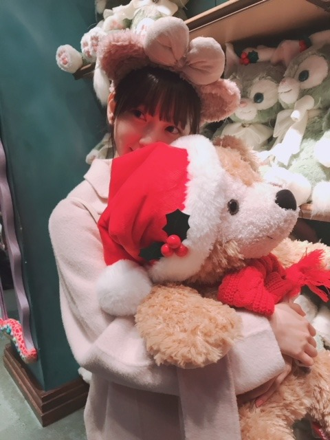
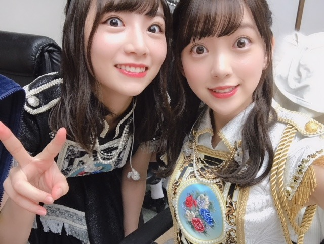

2018/1208Satゆず風呂ってステキ
すっかり冬になりましたね
年末まで駆け抜け、そして2019年
気持ちをビシッと新たに頑張りたいです
そう言いながらも今、少し咳が出ていて...
風邪をひかないようにしなきゃ...
お風呂にもしっかり浸かって温まります♪
あ、ちなみにわたしがお風呂で歌う曲は、
back numberさんスピッツさんaikoさん
が断然多いです、
という謎の報告です

昨日は世田谷ラブストーリーを
歌ってました
大熱唱というよりかはつぶやき歌
みたいな感じですので近所迷惑には
なってないはず、、、
今日はなに歌おうかな〜？
乃木坂も歌います
ひとりよがり
君に贈る花がない
立ち直り中
優しさとは
が好きかな☺︎


いきなりですがこの度、
第11回日本ブルーレイ大賞アンバサダー
に選んでいただきました！
表紙をさせていただいた
「ブルーレイディスクナビゲートBOOK」が
テイクフリーで配布されているみたいです
ブルーレイの話はもちろん
いろんなお話をさせていただいたので
お手にとって見ていただけたら嬉しいです
ブルーレイ大賞アンバサダーとして
ブルーレイはもちろん映画の偉大さや
魅力を伝えていけるよう精一杯頑張ります☺︎
来週の水曜日はFNS歌謡祭に
出させていただきます！
色々な関係で今はエクステを付けていて
髪が長いのですが
ぜひ、頑張って見つけてください...♪
先日の若さんの卒業セレモニーのお話しは
次のブログでゆっくりと
お話しさせていただきます！


笑
堀北コンビ♡
今は2人とも髪が長め
雑誌のお知らせ☺︎
12/12 ar
12/14「遊・悠・WesT」九州版2018冬号
12/14 月刊TVガイド
12/19 週刊東京ウォーカー+
12/20 東海ウォーカー(表紙をさせていただきました)
12/25 OVERTURE
12/26 withよろしくお願いします！
寒いので
皆さんも体調にはお気をつけて...
では☺︎
2018/12/08 09:00
コメント(408)
みおな、こんばんは。更新ありがとう！ 冬デスね！寒くなってきますが体調整えてFNS楽しみにしてます。雑誌の告知もありがとう。 では、毎日みおなに良いこと沢山ありますように！ おやすみおな！！
もっとブログ書いてよー>_<
もっと見たいよー(;_;)❤️
もっと見たいよー(;_;)❤️
未央奈ちゃん今年もありがとうございます！今年もありがとうございます！頑張ります‼頑張って下さい！体調に気を付けて下さい！ありがとうございます
そうなんだよね〜もう年の瀬なんだよな〜こんな暖かいと年末感じが・・・・無い(笑)ヽ(￣▽￣)ノ平成も終わりか・・・・・平成の始めを知ってる！おっちゃんも・・・あの時は17才Σ(゜Д゜)只今( ´ ▽ ` )ﾉ48才Σ(゜Д゜)
未央ちゃん
ブログ更新ありがとう
ブルーレイ大賞アンバサダー
頑張ってね
フリーペーパー
見たよ
未央ちゃんも
空気乾燥してきたから
体調管理注意してね
ブログ更新ありがとう
ブルーレイ大賞アンバサダー
頑張ってね
フリーペーパー
見たよ
未央ちゃんも
空気乾燥してきたから
体調管理注意してね
みおな、ブログ更新ありがとう。今週の火曜日に若様のセレモニーがあってからもう数日経ったけど、未だに若様がいないことが信じられません。この後もじょーさんやひな、そして来年の2月になーちゃんが卒業、そこに新しく加わる４期生のメンバー達。色んなことが起こりすぎて心の整理がつきません。きっと、みおなのほうがもっと複数な気持ちだと思います。でも、みんなアイドルになりたくて入ってきた人達ではなく、あくまでもその先にある自分の本当にやりたいことを見つけるため。なーちゃんも若様もひなもじょーさんもそれを見つけたから次へ進むことを決めた。だから、卒業はあくまでも次に進むためのステップだと思うようにしました。乃木坂を卒業しても全く会えないわけじゃない、別の場所でまたもう一度会えると。だから、みおなもこれから大変だろうけど自分のペースで頑張って下さい。応援してます。
湯船に浸かるのは体力を消耗するので、体調が悪いときには長湯は避けた方が良いですよ。
(^ー^)
(^ー^)
みおな☆
堀北コンビのphoto、可愛いーー！
堀北コンビのphoto、可愛いーー！
咳ね。
朝出ます。
そう･･･乾燥。
私の場合は、飲めば治ります(笑)
お風呂では歌わんな～～(笑)
ブルーレイ？
日頃からお世話になっております(笑)
FNS歌謡祭も観れなくなっちゃうもの(笑)
そうか～～
髪を養殖したか～～
朝出ます。
そう･･･乾燥。
私の場合は、飲めば治ります(笑)
お風呂では歌わんな～～(笑)
ブルーレイ？
日頃からお世話になっております(笑)
FNS歌謡祭も観れなくなっちゃうもの(笑)
そうか～～
髪を養殖したか～～
コメント失礼します！
最近寒すぎて布団から出られません笑みおなも体調には気おつけて！！冬のお風呂は最強ですよね笑
堀北コンビ可愛いすぎます（＾_＾）
ブログ更新ありがとう
最近寒すぎて布団から出られません笑みおなも体調には気おつけて！！冬のお風呂は最強ですよね笑
堀北コンビ可愛いすぎます（＾_＾）
ブログ更新ありがとう
お～い！
ダッフィ～！
オレと代われ～！
ｗ
ダッフィ～！
オレと代われ～！
ｗ
初めてコメントさせていただきます。
未央奈ちゃんに憧れて、先週初めてエクステをつけて見たのですが、本数や種類が自分に合っていなかった気がして後悔しています。
いつも、エクステは何本つけていますか？
あと、接合部分の種類は？？
未央奈ちゃんに憧れて、先週初めてエクステをつけて見たのですが、本数や種類が自分に合っていなかった気がして後悔しています。
いつも、エクステは何本つけていますか？
あと、接合部分の種類は？？
アンバサダーおめでとう！！
急すぎてびっくりしたけど笑
冊子見つけたらゲットしとくね！！
急すぎてびっくりしたけど笑
冊子見つけたらゲットしとくね！！
休めるときはちゃんと休んでくださいね。
スピッツは私もたまに口にします。
ただ，最近は歌に執着しないようにしようと思っています。聴いていても気を安らげるだけで何の解決にもならないって思い始めましたんで。
とはいえ，『帰り道は遠回りしたくなる』とかUruさんの『プロローグ』とかは聴いたり口ずさんだりしちゃいます。それから，歌詞があるものでも曲だけで聴くとおもしろいですよね。通常は背後で歌詞を引き立てているメロディだけど，それ自身がもつすごさ，美しさ，ありがたさがわかります。
日本ブルーレイ大賞アンバサダー，うれしいですね。がんばってください。
では。
スピッツは私もたまに口にします。
ただ，最近は歌に執着しないようにしようと思っています。聴いていても気を安らげるだけで何の解決にもならないって思い始めましたんで。
とはいえ，『帰り道は遠回りしたくなる』とかUruさんの『プロローグ』とかは聴いたり口ずさんだりしちゃいます。それから，歌詞があるものでも曲だけで聴くとおもしろいですよね。通常は背後で歌詞を引き立てているメロディだけど，それ自身がもつすごさ，美しさ，ありがたさがわかります。
日本ブルーレイ大賞アンバサダー，うれしいですね。がんばってください。
では。
ロング未央奈もかわいい
私もbacknumberさん、好きだぜ。
堀北コンビめっちゃ良い！
雑誌も楽しみにしてるね♫
雑誌も楽しみにしてるね♫
ブログ更新ありがとうね(*^^*)
自分は乃木坂の曲を口笛するのが多いかな(^-^)
やっぱり、ロングの未央奈も可愛いなー(-.-)
堀北コンビは最高だね!щ(゜▽゜щ)
自分は乃木坂の曲を口笛するのが多いかな(^-^)
やっぱり、ロングの未央奈も可愛いなー(-.-)
堀北コンビは最高だね!щ(゜▽゜щ)
みおな、こんばんは(^_^)
今は、エクステを着けてるんだね、いつの写真だろうとか思っちゃった(^_^;)
みおなは、髪がロングでもショートでもかわいい(^_^)
来週のFNS歌謡祭、楽しみにしてるね＼(^o^)／
必ず見るからね(^o^)／
みおなが健康でいられる様に祈ってるね(^_^)
それじゃ、またね(^o^)／
今は、エクステを着けてるんだね、いつの写真だろうとか思っちゃった(^_^;)
みおなは、髪がロングでもショートでもかわいい(^_^)
来週のFNS歌謡祭、楽しみにしてるね＼(^o^)／
必ず見るからね(^o^)／
みおなが健康でいられる様に祈ってるね(^_^)
それじゃ、またね(^o^)／
ここ３日ほどナビゲートブックを探して彷徨ってるんだけどまだ見つからないよ。
もう全部持っていかれたんだろうかね？
次の休みは駅前まで行ってみるか。。。
にしても、関連雑誌が目白押しだねえ。
個別にチェックしてみますよ。
そしてインフルエンザにはとくに気を付けよう。
もう全部持っていかれたんだろうかね？
次の休みは駅前まで行ってみるか。。。
にしても、関連雑誌が目白押しだねえ。
個別にチェックしてみますよ。
そしてインフルエンザにはとくに気を付けよう。
寮生活のふくもんです。
backnumberめっちゃいいですよね！
世田谷ラブストーリーはbacknumberが1番自分らしくかけた曲なんだって！あと、堀北コンビ最高！！二人とも透明感が凄すぎ。めっちゃ好きです！頑張ってください！
backnumberめっちゃいいですよね！
世田谷ラブストーリーはbacknumberが1番自分らしくかけた曲なんだって！あと、堀北コンビ最高！！二人とも透明感が凄すぎ。めっちゃ好きです！頑張ってください！
更新ありがとう
咳出てるって大丈夫？
風邪引かないように薬飲んで暖かくして寝るんだよ！
お風呂もゆっくり入ってでも乾燥には気をつけてね！急に温かいお風呂に入るのはやめた方がいいよ。
僕15歳なのにお風呂で倒れる事に2回もあったから
倒れたあと痙攣してたって言ってたから未央奈気
をつけてね！
僕もお風呂で歌歌ってるよ！
乃木坂が多いて言うか乃木坂しか歌わない
帰り道は遠回りしたくなる
空扉
ジコチューで行こう
トキトキメキメキ
三番目の風とか色々歌ってる。笑笑
写メ可愛い
大賞貰えるって凄いじゃん
嬉しいね ☺
FNS歌謡祭絶対に見るね！
堀北コンビ可愛い
雑誌も買います！
この辺で失礼します
ﾊﾞｲﾊﾞｲ(ヾ(´・ω・｀)
乃木坂大好き
咳出てるって大丈夫？
風邪引かないように薬飲んで暖かくして寝るんだよ！
お風呂もゆっくり入ってでも乾燥には気をつけてね！急に温かいお風呂に入るのはやめた方がいいよ。
僕15歳なのにお風呂で倒れる事に2回もあったから
倒れたあと痙攣してたって言ってたから未央奈気
をつけてね！
僕もお風呂で歌歌ってるよ！
乃木坂が多いて言うか乃木坂しか歌わない
帰り道は遠回りしたくなる
空扉
ジコチューで行こう
トキトキメキメキ
三番目の風とか色々歌ってる。笑笑
写メ可愛い
大賞貰えるって凄いじゃん
嬉しいね ☺
FNS歌謡祭絶対に見るね！
堀北コンビ可愛い
雑誌も買います！
この辺で失礼します
ﾊﾞｲﾊﾞｲ(ヾ(´・ω・｀)
乃木坂大好き
未央奈、ブログの更新ありがとう。
もう12月なんだよね・・・
今年は約1か月だけど・・・
未央奈が出演する番組や載る雑誌、握手会もあるし、今年は残し少なくなったけど、まだまだ楽しいことがたくさんあるし、最後まで2018年を楽しむぞ
ブルーレイー大賞アンバサダーの就任おめでとう
テイクフリーの本があるんだね。
どこに行けばもらえるんだろう？
明日は買い物に行こうと思っていたから探してみるよ。
未央奈に質問されたら回答に困る質問があって、
それは「どの髪型が一番似合う」という質問なんだよね。
未央奈はショート・ロングなど、どんな髪型も可愛し・似合うから一番を選べないか困ってるよ。
12月は出演する番組も多いから忙しいとは思うけど、体調に気を付けてお互いに頑張ろうね。
ゴロ～
もう12月なんだよね・・・
今年は約1か月だけど・・・
未央奈が出演する番組や載る雑誌、握手会もあるし、今年は残し少なくなったけど、まだまだ楽しいことがたくさんあるし、最後まで2018年を楽しむぞ
ブルーレイー大賞アンバサダーの就任おめでとう
テイクフリーの本があるんだね。
どこに行けばもらえるんだろう？
明日は買い物に行こうと思っていたから探してみるよ。
未央奈に質問されたら回答に困る質問があって、
それは「どの髪型が一番似合う」という質問なんだよね。
未央奈はショート・ロングなど、どんな髪型も可愛し・似合うから一番を選べないか困ってるよ。
12月は出演する番組も多いから忙しいとは思うけど、体調に気を付けてお互いに頑張ろうね。
ゴロ～
今のこの寒暖差の激しい気候でもあるから、暖かくして体調崩さない様に気をつけてネッ。
俺もゆず湯に入るの、大好きなんだ。
身体の芯まで暖まるから、ゆっくりと入っていたい気分になるんだ。
話変わるけど、FNS歌謡祭、予約録画してあるんだ。必ず観るよ。
俺もゆず湯に入るの、大好きなんだ。
身体の芯まで暖まるから、ゆっくりと入っていたい気分になるんだ。
話変わるけど、FNS歌謡祭、予約録画してあるんだ。必ず観るよ。
すきです。
ブログ更新ありがとう
大賞おめでとう
これからも頑張って
大賞おめでとう
これからも頑張って
未央奈～ こんにちは
ブログ更新ありがとうございます。
「NOGIBINGO１０」、おつかれさまでした。とにかく「かわいい」の一言でしたね。あれだけ、かわいいとホント、「ほしく」なりますよね。
そして、若さまの卒業セレモニー、ホント感動的でした。いたるところに若さまらしさがあふれていて、存在感ありありでしたね。
思い出すのは、「乃木坂４６SHOW」の冒頭コント、いやもっと前、勉強のためにといって、博多座の舞台に連れて行ってもらったことありましたよね。２期生にも積極的に話しかけてくれた若さまの存在は、ありがたかったですね。
さぁ、そのあとを受け、新しい乃木坂を作っていかなければなりませんね。そんな意味でも堀北コンビ、２２ndで久々に元気な姿に、とてもうれしく思います。
来週、水曜日はFNS歌謡祭からレコメンへ‥‥、楽しみにしています。
ここに来て、一気に冷え込んできました。風邪などひかないように、くれぐれも体調管理には気をつけてくださいね。
ブログ更新ありがとうございます。
「NOGIBINGO１０」、おつかれさまでした。とにかく「かわいい」の一言でしたね。あれだけ、かわいいとホント、「ほしく」なりますよね。
そして、若さまの卒業セレモニー、ホント感動的でした。いたるところに若さまらしさがあふれていて、存在感ありありでしたね。
思い出すのは、「乃木坂４６SHOW」の冒頭コント、いやもっと前、勉強のためにといって、博多座の舞台に連れて行ってもらったことありましたよね。２期生にも積極的に話しかけてくれた若さまの存在は、ありがたかったですね。
さぁ、そのあとを受け、新しい乃木坂を作っていかなければなりませんね。そんな意味でも堀北コンビ、２２ndで久々に元気な姿に、とてもうれしく思います。
来週、水曜日はFNS歌謡祭からレコメンへ‥‥、楽しみにしています。
ここに来て、一気に冷え込んできました。風邪などひかないように、くれぐれも体調管理には気をつけてくださいね。
ゆずといえば高知！！
絶対行ってみてください！！
自然溢れてゆったりとした時間を過ごせます！！
馬路村だよ！！
ほんとに最高だから！！
絶対行ってみてください！！
自然溢れてゆったりとした時間を過ごせます！！
馬路村だよ！！
ほんとに最高だから！！
ブログ更新ありがとう！
そして、日本ブルーレイ大賞アンバサダーおめでとう！
映画関係のお仕事も増えてきて、私も嬉しいです。
本当に同じ岐阜県出身であることを誇りに思ってます。
私はボヘミアン・ラプソディという映画を見てきたので、最近はQUEEN ばかり口ずさんでます笑
急に寒くなりましたので、年末のお仕事はハードだと思いますが、体調には十分に気をつけて2018年を駆け抜けてください！
いつも陰ながら応援してます！
そして、日本ブルーレイ大賞アンバサダーおめでとう！
映画関係のお仕事も増えてきて、私も嬉しいです。
本当に同じ岐阜県出身であることを誇りに思ってます。
私はボヘミアン・ラプソディという映画を見てきたので、最近はQUEEN ばかり口ずさんでます笑
急に寒くなりましたので、年末のお仕事はハードだと思いますが、体調には十分に気をつけて2018年を駆け抜けてください！
いつも陰ながら応援してます！
未央奈ちゃん、こんばんは(*￣∇￣)ノ
もうゆず風呂に入ったんだ。冬至を先取りだね。
身体を温めて、疲れをとってゆっくり休んでね(*^O^*)
堀北コンビの写真をアップしてくれてありがとう＼(^o^)／
きいちゃんも元気そうで嬉しいよ(*´ω｀*)
もうゆず風呂に入ったんだ。冬至を先取りだね。
身体を温めて、疲れをとってゆっくり休んでね(*^O^*)
堀北コンビの写真をアップしてくれてありがとう＼(^o^)／
きいちゃんも元気そうで嬉しいよ(*´ω｀*)
堀北コンビ可愛い♡
みおなー！すき！
お風呂で歌う曲←そもそも、お風呂で歌ってることが可愛すぎる!!!(〃▽〃) FNS歌謡祭も楽しみにしてるよぉ♪♪ 堀ちゃんを見ることが、最高の癒し(*´-`) 何より、今は堀ちゃんの体調が心配だけど...。あったかく&ゆっくり体休めてあげてねぇ☆
堀さん、こんばんは♪
堀さんはお風呂で歌うのですね。
僕は家でよく口笛を吹いています。
乃木坂46の おいでシャンプー をよく吹きます。
ゆっくりとした曲なので吹きやすいです。
今回のブログの写真は3枚目が好きです。
ではまたコメントしますね☆
堀さんはお風呂で歌うのですね。
僕は家でよく口笛を吹いています。
乃木坂46の おいでシャンプー をよく吹きます。
ゆっくりとした曲なので吹きやすいです。
今回のブログの写真は3枚目が好きです。
ではまたコメントしますね☆
風邪には気をつけてね^^
若様セレモニーの話も楽しみにしてるね(^^)
あと堀北コンビ最高！
若様セレモニーの話も楽しみにしてるね(^^)
あと堀北コンビ最高！
堀ちゃん！初めてコメントします
えっエクステつけてる理由めっちゃ気になるんだけど ！教えて！笑
次の更新も楽しみにしてます︎☺︎♥
えっエクステつけてる理由めっちゃ気になるんだけど ！教えて！笑
次の更新も楽しみにしてます︎☺︎♥
未央奈～こんばんは！
ぽてとです！
お風呂で歌を唄うの良いね♪
自分も鼻歌を歌ってる♪
Blu-rayアンバサダー
おめでとう！
たくさん魅力を伝えてね！
堀北最高やで！
じゃあまたね！
ぽてとです！
お風呂で歌を唄うの良いね♪
自分も鼻歌を歌ってる♪
Blu-rayアンバサダー
おめでとう！
たくさん魅力を伝えてね！
堀北最高やで！
じゃあまたね！
未央奈！(*´꒳`*)
柚子風呂ってステキだよね！水じゃなく柚子の果樹100パーセントでたいたお風呂！未央奈をコトコト煮込んで柚子未央奈の感性です！！(色々違う
2019ビシッと！^ ^ オーケー分かりました。私もビシッと応援して行くからね！！
風邪引いたの？？大丈夫かな。。
先日755でも風邪予防の方法は書いたけれども、ビタミンCだよ！ミカンやリンゴを食べてね！
すでに食べてるならビタミンD不足だよ。まずはマイタケとかのビタミンD。ただビタミンDには大きく分けて2種類あるんだ。もう片方は日光を浴びる必要があるから未央奈的にはなかなか難しかな。涙
後何度も言っているけれど睡眠！これは人間のほぼ全ての体の問題に1番効果が高いです。難しいとおもいますがなるべく質の良い睡眠を心がけてね^ ^
未央奈もお風呂で歌っているのですね！ん〜聴きたい〜録音機材お風呂に入れてCD発売してください！笑
呟き歌、ハミング的な感じかな？？近所迷惑になるレベルで声漏れてたら、客席置いてチケット販売できますね！でも未央奈の安息の時間を壊したくないから却下です♬(今日は私変なテンションなきがする。。笑
ひとりよがり。
私もこの曲は心に響いてすきです。ストーリーも切なく、凄く女の子の強さも弱さも同時に感じられる気がします。
未央奈もその、恋愛を我慢してアイドルとして頑張ってる部分、どこか似たものがありますよね。^ ^
私はアイドル好きになってから(ま、乃木坂オンリー且つ未央奈単推しですが。)アイドルの恋愛禁止の必要性は凄く分かるようになりました。
アイドルを「本気」で応援するには、ファン側も実はできない事が増えるんですよね。(*´-`)
でも私は未央奈を見つけられて応援出来る事が凄く嬉しいです♬
ゆったんとの写真の1枚、未央奈の髪色が明るくなってるのがよく見えるね！(*´꒳`*)めっちゃ可愛いよ〜！そしてやっぱり私は未央奈のぱっちりお目目大好きです♬
ブルーレイ大賞アンバサダー就任おめでとう！！(*´-`)やっぱり未央奈が映画好きってたくさん発信していたからこういうのはに繋がったよね！良き良き。笑
なったからには頑張ってね！未央奈の真っ直ぐな純真さから出る言葉、気持ちが伝わる言葉だからきっとうまく行くさ！^ ^
歌謡祭も頑張って！(*´꒳`*)応援してる！
髪が長くても短くても見つけるさ。大丈夫♬私は髪の長い未央奈もスーパー大好きなので問題になりませんよ！！すぐ見つけます！！
若様の事、次のブログをゆっくり待ちますね！
堀北コンビ♬改めてきいちゃんの活動再開嬉しい。^ ^ 未央奈が755とかでもずっときいちゃんを気にかけていたの思い出しました。
こんな写真とれる様になって嬉しいです。
やっぱり2期生みんな揃ってお仕事したいですよね！(*´꒳`*)
お！雑誌いっぱいだね。チェックして行くよ！楽しみ♬
おけー。私も気をつけるよ！未央奈も早く風邪なおしてね〜(*´-`)では！！
柚子風呂ってステキだよね！水じゃなく柚子の果樹100パーセントでたいたお風呂！未央奈をコトコト煮込んで柚子未央奈の感性です！！(色々違う
2019ビシッと！^ ^ オーケー分かりました。私もビシッと応援して行くからね！！
風邪引いたの？？大丈夫かな。。
先日755でも風邪予防の方法は書いたけれども、ビタミンCだよ！ミカンやリンゴを食べてね！
すでに食べてるならビタミンD不足だよ。まずはマイタケとかのビタミンD。ただビタミンDには大きく分けて2種類あるんだ。もう片方は日光を浴びる必要があるから未央奈的にはなかなか難しかな。涙
後何度も言っているけれど睡眠！これは人間のほぼ全ての体の問題に1番効果が高いです。難しいとおもいますがなるべく質の良い睡眠を心がけてね^ ^
未央奈もお風呂で歌っているのですね！ん〜聴きたい〜録音機材お風呂に入れてCD発売してください！笑
呟き歌、ハミング的な感じかな？？近所迷惑になるレベルで声漏れてたら、客席置いてチケット販売できますね！でも未央奈の安息の時間を壊したくないから却下です♬(今日は私変なテンションなきがする。。笑
ひとりよがり。
私もこの曲は心に響いてすきです。ストーリーも切なく、凄く女の子の強さも弱さも同時に感じられる気がします。
未央奈もその、恋愛を我慢してアイドルとして頑張ってる部分、どこか似たものがありますよね。^ ^
私はアイドル好きになってから(ま、乃木坂オンリー且つ未央奈単推しですが。)アイドルの恋愛禁止の必要性は凄く分かるようになりました。
アイドルを「本気」で応援するには、ファン側も実はできない事が増えるんですよね。(*´-`)
でも私は未央奈を見つけられて応援出来る事が凄く嬉しいです♬
ゆったんとの写真の1枚、未央奈の髪色が明るくなってるのがよく見えるね！(*´꒳`*)めっちゃ可愛いよ〜！そしてやっぱり私は未央奈のぱっちりお目目大好きです♬
ブルーレイ大賞アンバサダー就任おめでとう！！(*´-`)やっぱり未央奈が映画好きってたくさん発信していたからこういうのはに繋がったよね！良き良き。笑
なったからには頑張ってね！未央奈の真っ直ぐな純真さから出る言葉、気持ちが伝わる言葉だからきっとうまく行くさ！^ ^
歌謡祭も頑張って！(*´꒳`*)応援してる！
髪が長くても短くても見つけるさ。大丈夫♬私は髪の長い未央奈もスーパー大好きなので問題になりませんよ！！すぐ見つけます！！
若様の事、次のブログをゆっくり待ちますね！
堀北コンビ♬改めてきいちゃんの活動再開嬉しい。^ ^ 未央奈が755とかでもずっときいちゃんを気にかけていたの思い出しました。
こんな写真とれる様になって嬉しいです。
やっぱり2期生みんな揃ってお仕事したいですよね！(*´꒳`*)
お！雑誌いっぱいだね。チェックして行くよ！楽しみ♬
おけー。私も気をつけるよ！未央奈も早く風邪なおしてね〜(*´-`)では！！
未央奈ちゃん、今日も一日お疲れさまです。
私もお風呂では湯船に入ると
必ず歌っちゃうんですが、喉の調子が悪い時は、
自分でもわかるぐらい歌が下手です！（笑）
最近は気温の変化が激しくて
体調管理が大変でしょうが
年末に向けて更に忙しくなるでしょうから
注意して乗り切ってくださいね！！！
いつでも応援しています！！！
大好きです！！！
私もお風呂では湯船に入ると
必ず歌っちゃうんですが、喉の調子が悪い時は、
自分でもわかるぐらい歌が下手です！（笑）
最近は気温の変化が激しくて
体調管理が大変でしょうが
年末に向けて更に忙しくなるでしょうから
注意して乗り切ってくださいね！！！
いつでも応援しています！！！
大好きです！！！
未央奈のショートはもちろん好きだけどロングもいいっ！！
FNS歌謡祭たのしみにしてまーすっ！がんばってね！
FNS歌謡祭たのしみにしてまーすっ！がんばってね！
未央奈ちゃんのお風呂での君に贈る花がない聴いてみたいな～
みおちゃんもきぃちゃんも目が大きくて綺麗で羨ましいな(о´∀`о)
みおちゃんもきぃちゃんも目が大きくて綺麗で羨ましいな(о´∀`о)
aiko さんの透明ドロップっていう曲。実は歌詞カードに書いてないセリフがあるんですよ！みてみてね！
ブログ更新ありがと～
堀北コンビめっちゃ好き～
大人への近道のMVでもけっこう二人一緒にうつるとこあってめっちゃ好き～
堀北コンビめっちゃ好き～
大人への近道のMVでもけっこう二人一緒にうつるとこあってめっちゃ好き～
堀北コンビいいね！
ダッフィー君ふかふかしてそう笑
ダッフィー君ふかふかしてそう笑
ブルーレイアンバサダーって何だろうってなったわ（笑）
FNSは例のグループ出るのかな？頑張って！
FNSは例のグループ出るのかな？頑張って！
堀さん、こんばんは。ブログ更新してくれて嬉しいです。
色んな表情の写真ありがとうございます。今回の写真でも手が綺麗ですね。卒業セレモニーの衣装は何だか剣が似合います。
僕は堀さんの声が好きなので、以前46時間TVでやったみたいなカラオケ企画がどこかで見たいです。「元気を出して」とか色んな名曲歌ってほしいです。
余談ですが、以前僕が住んでたアパートでコンロの上の換気扇からたまに歌声が聞こえてきて、何がどう繋がってんだろうなって思いながら台所に立ってました。
日本ブルーレイ大賞アンバサダー就任おめでとうございます。堀さんの映画愛を認めてもらったんですね。明日にでも冊子を探しに行きます。
あとFNS歌謡祭楽しみです。髪が長い色々な関係というのが気になります。ブログの最後の写真のように瞠目に値する何かが有るのでしょうか。
忙しいとは思いますが、寝て体調整えて年始まで突っ走ってくださいね。
色んな表情の写真ありがとうございます。今回の写真でも手が綺麗ですね。卒業セレモニーの衣装は何だか剣が似合います。
僕は堀さんの声が好きなので、以前46時間TVでやったみたいなカラオケ企画がどこかで見たいです。「元気を出して」とか色んな名曲歌ってほしいです。
余談ですが、以前僕が住んでたアパートでコンロの上の換気扇からたまに歌声が聞こえてきて、何がどう繋がってんだろうなって思いながら台所に立ってました。
日本ブルーレイ大賞アンバサダー就任おめでとうございます。堀さんの映画愛を認めてもらったんですね。明日にでも冊子を探しに行きます。
あとFNS歌謡祭楽しみです。髪が長い色々な関係というのが気になります。ブログの最後の写真のように瞠目に値する何かが有るのでしょうか。
忙しいとは思いますが、寝て体調整えて年始まで突っ走ってくださいね。
堀北コンビ！
大好きです！
大好きです！
未央奈ちゃん、こんばんは(^o^)/
自分では小声で歌ってるつもりでもお風呂って意外と音が響くから気をつけてね( ＾∀＾)
第11回日本ブルーレイ大賞アンバサダー就任おめでとうございます( ＾∀＾)
ショートも似合ってて良いけど、やっぱり未央奈は髪長い方が好きだな(・o・)
いつかSHOW ROOMで堀北コンビで配信してください( ＾∀＾)
自分では小声で歌ってるつもりでもお風呂って意外と音が響くから気をつけてね( ＾∀＾)
第11回日本ブルーレイ大賞アンバサダー就任おめでとうございます( ＾∀＾)
ショートも似合ってて良いけど、やっぱり未央奈は髪長い方が好きだな(・o・)
いつかSHOW ROOMで堀北コンビで配信してください( ＾∀＾)
未央奈～☆☆
第11回日本ブルーレイ大賞アンバサダー
おめでとう～！！
映画好きの未央奈だからこそ伝えられることが
たくさんありそう。
未央奈、よかったね！
FNS歌謡祭は、髪の長い未央奈が
どんな髪型で出るのかめっちゃ楽しみだな～
余裕で見つけるよー笑
咳出てるみたいだけど大丈夫？
年末で忙しいと思うけど、体大事にしてね。
第11回日本ブルーレイ大賞アンバサダー
おめでとう～！！
映画好きの未央奈だからこそ伝えられることが
たくさんありそう。
未央奈、よかったね！
FNS歌謡祭は、髪の長い未央奈が
どんな髪型で出るのかめっちゃ楽しみだな～
余裕で見つけるよー笑
咳出てるみたいだけど大丈夫？
年末で忙しいと思うけど、体大事にしてね。


ひさびさの堀北コンビ！！
サイコーです！！！
プリン会の写真もまた載せてくださーい！！！
お仕事頑張ってください！！！